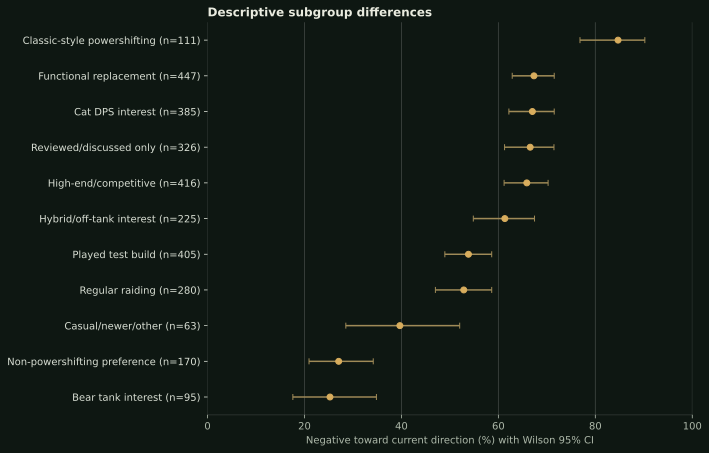
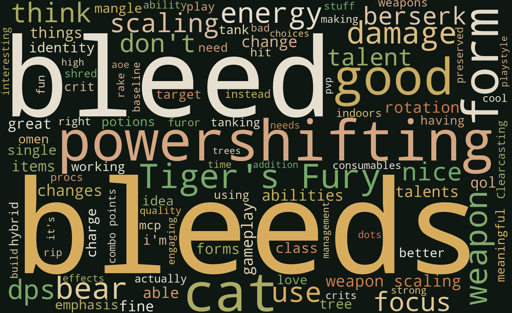
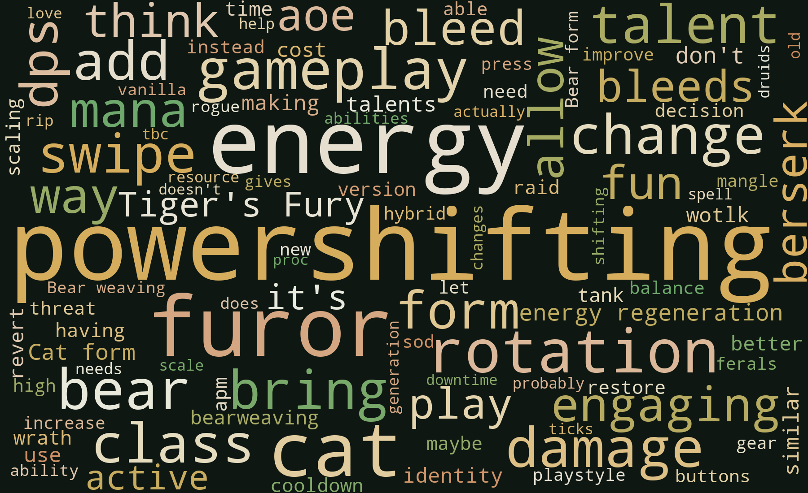
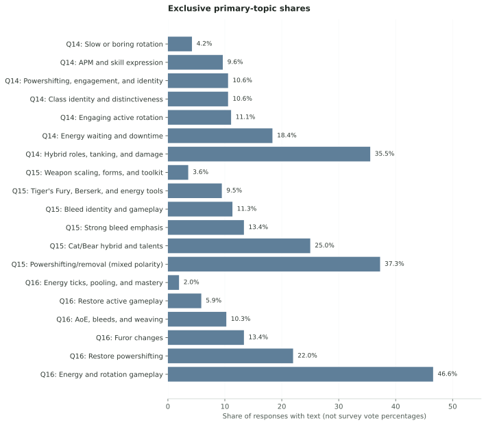

TRANSPARENCY WITHOUT THE DETOUR
Methods, limitations & downloads
Everything needed to inspect or reproduce the analysis lives here, separate from the main community story.
← Back to the reportSource and privacy boundary
- Authoritative source: Google spreadsheet
1muybYt_lCb0MZvsquooyl1X5JbDz0K4gP-zT72lrM6E, worksheetForm Responses 1. - Retrieved: September 21, 2026 at 5:36 PM CDT.
- Snapshot: 758 populated timestamp rows × 45 columns.
- SHA-256:
4e6694a846ce3a60d1f2126220f761377e309af26a8450da73346527da188f67. - Privacy: raw responses and local snapshots are gitignored. Only aggregates, anonymous model weights, and permission-checked excerpts are public.
The local project also contains DiscordKit exports of the Druid Classic channels #forever-general, #forever-feral-dps, and #forever-feral-tank, covering discussion from September 12–20, 2026. They explain the setting that motivated the survey. They are not part of the analyzed corpus, are not quoted, and are not published.
Sample and data quality
Valid responses are rows with populated timestamps, not allocated sheet rows. Exact answer duplicates and timestamp collisions are checked separately. “Not enough information” remains in every stated denominator.
| question | columns | missing_cells | respondents_with_any_missing | respondents | complete_percent |
|---|---|---|---|---|---|
| Q1 | 1 | 0 | 0 | 758 | 100.0 |
| Q2 | 1 | 0 | 0 | 758 | 100.0 |
| Q3 | 1 | 0 | 0 | 758 | 100.0 |
| Q4 | 1 | 0 | 0 | 758 | 100.0 |
| Q5 | 1 | 0 | 0 | 758 | 100.0 |
| Q6 | 1 | 0 | 0 | 758 | 100.0 |
| Q7 | 1 | 0 | 0 | 758 | 100.0 |
| Q8 | 1 | 0 | 0 | 758 | 100.0 |
| Q9 | 10 | 0 | 0 | 758 | 100.0 |
| Q10 | 10 | 0 | 0 | 758 | 100.0 |
| Q11 | 10 | 0 | 0 | 758 | 100.0 |
| Q12 | 1 | 0 | 0 | 758 | 100.0 |
| Q13 | 1 | 8 | 8 | 758 | 98.9 |
| Q14 | 1 | 3 | 3 | 758 | 99.6 |
| Q15 | 1 | 119 | 119 | 758 | 84.3 |
| Q16 | 1 | 147 | 147 | 758 | 80.6 |
| Q17 | 1 | 0 | 0 | 758 | 100.0 |
Subgroup comparisons
Subgroup results are descriptive, not causal. Groups under 30 are omitted. Major proportions include Wilson 95% confidence intervals, which describe uncertainty within this self-selected sample rather than making it representative.

| group | outcome | count | denominator | percent | ci_low | ci_high | minimum_group_size |
|---|---|---|---|---|---|---|---|
| Cat DPS interest | Negative direction | 258 | 384 | 67.2 | 62.3 | 71.7 | 30 |
| Cat DPS interest | Would play | 147 | 384 | 38.3 | 33.6 | 43.2 | 30 |
| Cat DPS interest | Less excited | 261 | 384 | 68.0 | 63.1 | 72.4 | 30 |
| Bear tank interest | Negative direction | 24 | 95 | 25.3 | 17.6 | 34.8 | 30 |
| Bear tank interest | Would play | 60 | 95 | 63.2 | 53.1 | 72.2 | 30 |
| Bear tank interest | Less excited | 25 | 95 | 26.3 | 18.5 | 36.0 | 30 |
| Hybrid/off-tank interest | Negative direction | 138 | 225 | 61.3 | 54.8 | 67.5 | 30 |
| Hybrid/off-tank interest | Would play | 111 | 225 | 49.3 | 42.9 | 55.8 | 30 |
| Hybrid/off-tank interest | Less excited | 147 | 225 | 65.3 | 58.9 | 71.2 | 30 |
| High-end/competitive | Negative direction | 274 | 415 | 66.0 | 61.3 | 70.4 | 30 |
| High-end/competitive | Would play | 183 | 415 | 44.1 | 39.4 | 48.9 | 30 |
| High-end/competitive | Less excited | 281 | 415 | 67.7 | 63.1 | 72.0 | 30 |
| Regular raiding | Negative direction | 148 | 280 | 52.9 | 47.0 | 58.6 | 30 |
| Regular raiding | Would play | 127 | 280 | 45.4 | 39.6 | 51.2 | 30 |
| Regular raiding | Less excited | 155 | 280 | 55.4 | 49.5 | 61.1 | 30 |
| Casual/newer/other | Negative direction | 25 | 63 | 39.7 | 28.5 | 52.0 | 30 |
| Casual/newer/other | Would play | 27 | 63 | 42.9 | 31.4 | 55.1 | 30 |
| Casual/newer/other | Less excited | 27 | 63 | 42.9 | 31.4 | 55.1 | 30 |
| Played test build | Negative direction | 218 | 405 | 53.8 | 49.0 | 58.6 | 30 |
| Played test build | Would play | 197 | 405 | 48.6 | 43.8 | 53.5 | 30 |
| Played test build | Less excited | 227 | 405 | 56.0 | 51.2 | 60.8 | 30 |
| Reviewed/discussed only | Negative direction | 217 | 325 | 66.8 | 61.5 | 71.7 | 30 |
| Reviewed/discussed only | Would play | 130 | 325 | 40.0 | 34.8 | 45.4 | 30 |
| Reviewed/discussed only | Less excited | 220 | 325 | 67.7 | 62.4 | 72.5 | 30 |
| Classic-style powershifting | Negative direction | 94 | 110 | 85.5 | 77.7 | 90.8 | 30 |
| Classic-style powershifting | Would play | 32 | 110 | 29.1 | 21.4 | 38.2 | 30 |
| Classic-style powershifting | Less excited | 96 | 110 | 87.3 | 79.8 | 92.3 | 30 |
| Functional replacement | Negative direction | 301 | 447 | 67.3 | 62.9 | 71.5 | 30 |
| Functional replacement | Would play | 180 | 447 | 40.3 | 35.8 | 44.9 | 30 |
| Functional replacement | Less excited | 330 | 447 | 73.8 | 69.6 | 77.7 | 30 |
| Non-powershifting preference | Negative direction | 46 | 170 | 27.1 | 20.9 | 34.2 | 30 |
| Non-powershifting preference | Would play | 102 | 170 | 60.0 | 52.5 | 67.1 | 30 |
| Non-powershifting preference | Less excited | 32 | 170 | 18.8 | 13.7 | 25.4 | 30 |
Written-response patterns
The three questions were modeled separately. Word-cloud sizes use the number of distinct responses mentioning a term—not repeated use inside one response. Survey boilerplate was removed and meaningful phrases were preserved.



Topic modeling
TF-IDF unigrams and bigrams feed deterministic non-negative matrix factorization. Candidate solutions from 4–10 topics were inspected for stability, repeated components, top terms, and high-weight responses. Labels are human interpretations of both the terms and representative comments. Primary-topic shares are not survey vote percentages.

Manual thematic and polarity check
Rule-based mention coding provides a second, transparent layer for the core themes. Categories overlap. Ambiguous comments are not forced into a position. Q15 powershifting mentions are separately checked because a topic model cannot reliably distinguish “preserve powershifting” from “preserve its removal.”
| theme | count | denominator | percent | coding |
|---|---|---|---|---|
| Bleed identity | 269 | 758 | 35.5 | Rule-based mention; non-exclusive |
| Powershifting or a functional equivalent | 126 | 758 | 16.6 | Rule-based mention; non-exclusive |
| AoE/Swipe | 113 | 758 | 14.9 | Rule-based mention; non-exclusive |
| High APM/activity | 93 | 758 | 12.3 | Rule-based mention; non-exclusive |
| Cat/Bear/caster weaving | 90 | 758 | 11.9 | Rule-based mention; non-exclusive |
| Distinctiveness from Rogue | 89 | 758 | 11.7 | Rule-based mention; non-exclusive |
| Hybrid/off-tank identity | 88 | 758 | 11.6 | Rule-based mention; non-exclusive |
| Energy downtime | 68 | 758 | 9.0 | Rule-based mention; non-exclusive |
| Skill expression/mastery | 62 | 758 | 8.2 | Rule-based mention; non-exclusive |
| Shapeshifting identity | 49 | 758 | 6.5 | Rule-based mention; non-exclusive |
| Literal powershifting restoration | 45 | 758 | 5.9 | Rule-based mention; non-exclusive |
| Raid utility | 42 | 758 | 5.5 | Rule-based mention; non-exclusive |
| Numerical tuning | 26 | 758 | 3.4 | Rule-based mention; non-exclusive |
| Non-powershifting but engaging | 4 | 758 | 0.5 | Rule-based mention; non-exclusive |
| category | count | denominator | percent |
|---|---|---|---|
| Not mentioned | 685 | 758 | 90.4 |
| Mentioned; polarity unclear | 33 | 758 | 4.4 |
| Preserve removal/non-powershifting | 31 | 758 | 4.1 |
| Ambiguous/mixed | 7 | 758 | 0.9 |
| Preserve/restore | 2 | 758 | 0.3 |
Change from the earlier 675-response snapshot
The added responses do not materially change the main conclusions. The live snapshot is authoritative.
| metric | earlier_675_percent | current_percent | change_pp |
|---|---|---|---|
| Negative toward current direction | 59.6 | 59.0 | -0.6 |
| Positive toward current direction | 22.5 | 23.2 | 0.7 |
| Less excited than Classic | 61.9 | 61.1 | -0.8 |
| More excited than Classic | 25.0 | 26.3 | 1.3 |
| Would probably/definitely play | 44.4 | 44.5 | 0.1 |
| Would probably/definitely not play | 33.6 | 33.0 | -0.6 |
| Functional replacement acceptable | 59.1 | 59.0 | -0.1 |
| Prefer non-powershifting if engaging | 22.2 | 22.4 | 0.2 |
| Specifically want Classic powershifting restored | 14.8 | 14.5 | -0.3 |
| Negative reaction to Furor/loss of powershifting | 70.1 | 69.4 | -0.7 |
| Rotation/activity selected for developer attention | 65.9 | 66.2 | 0.3 |
| Powershifting/Furor selected | 44.6 | 43.9 | -0.7 |
| Energy economy selected | 33.9 | 34.0 | 0.1 |
| Shapeshifting/weaving identity selected | 27.6 | 27.6 | -0.0 |
| AoE selected | 26.7 | 26.6 | -0.1 |
Limitations
- This is a self-selected sample of engaged Feral players.
- Community-channel reach, question wording, response dependence, and an evolving test build limit generalization.
- Topic models summarize language; they do not measure votes and are weak at negation.
- Rule-based themes favor transparency over perfect recall and should be read as mentions, not exhaustive hand coding.
- Subgroup differences are associations inside this sample, not causal effects.
Aggregate downloads
Multiselect files explicitly note that percentages may exceed 100%. No raw response export is included.